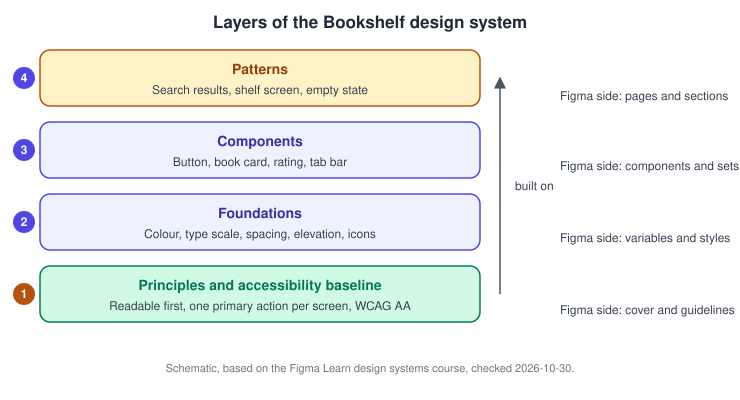
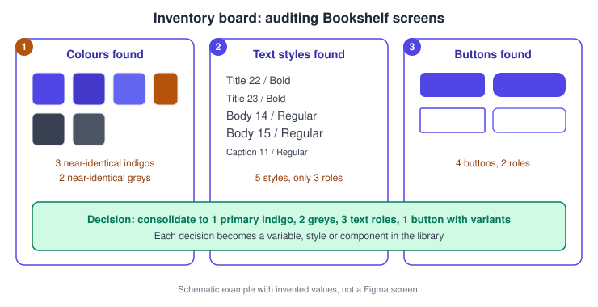
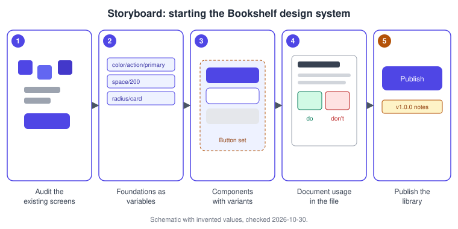
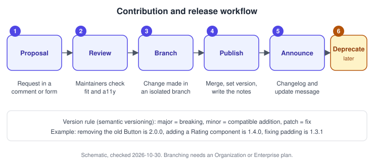

Design Systems in Figma
|
This content was generated with the assistance of AI and should be verified against the official documentation before being relied on in production. |
This page was written on 2026-10-30 against the UI3 interface of Figma Design. A design system is not a Figma feature but a practice: a shared set of principles, foundations, components and patterns, plus the documentation and rules that keep them consistent. Figma provides the building blocks (variables, styles, components, libraries, branching, Check designs); this page shows how to combine them. Building and publishing libraries needs edit access to a file, which means a Full seat, and publishing is available on paid plans, with a team-or-organization choice on Organization and Enterprise. Branching, Check designs and some analytics are tied to Organization or Enterprise plans according to the help articles consulted, so check Plans, Seats and AI Credits before planning around them. None of the features discussed here is labelled beta in the articles consulted; re-check the Figma release notes if status matters.
The running example is the Bookshelf app: a small team whose screens have grown by copy and paste and now need one source of truth. The mechanics of each building block live on dedicated pages: Components and Instances, Variants and Component Properties, Styles, Variables, Collections and Modes and Libraries and Publishing.
Architecture: foundations, components, patterns
Think of the system in layers, each built on the one below. Principles and an accessibility baseline come first, because they justify every later decision. Foundations (colour, type, spacing, elevation, iconography) come next, then components made from them, then patterns that combine components into solutions for recurring user goals.

The mapping to Figma is practical rather than prescribed:
-
Principles and accessibility baseline: written on the cover page of the library file. The Figma course suggests aiming for WCAG AA or higher.
-
Foundations: variables for colour and spacing, text and effect styles for what variables cannot hold. Variables carry semantic meaning (an action colour, not an indigo), see Design Tokens.
-
Components: main components and component sets with properties, built from the foundations.
-
Patterns: documented compositions, shown as frames or sections on pattern pages.
Planning and auditing
Before drawing anything, collect input and look at what exists. The Figma course recommends gathering views from across the company (for example in a shared FigJam brainstorm), distilling recurring themes into a few opinionated principles, and agreeing processes for updates, feedback and approvals before launch. The audit then reviews existing designs for near-duplicate colours, the number of text styles actually used for each role, and the common user flows and the solutions already in use.

Procedure: audit the Bookshelf screens
-
Create a Figma file or page named Audit, and paste a screenshot or a copy of each main Bookshelf screen into its own frame.
-
For each category (colours, text styles, buttons) create a labelled section and place one sample per distinct value next to its source frame. Select layers and read the values in the right sidebar.
-
Mark duplicates: values that differ only slightly and serve the same role.
-
Write the decision beside each group, for example one primary action colour and one button with variants.
-
Keep the board; it becomes the migration checklist when screens are updated to use the library.
The help articles consulted do not describe an automated inventory tool, so the board above is a manual technique, labelled here as a practice and not as a Figma feature.
Storyboard: building the first version

Procedure: create the library file
-
Create a new design file named Bookshelf Design System. Use pages to separate the cover, foundations, components and patterns.
-
On the foundations page, create a variable collection for colour and one for spacing, with names such as
color/action/primaryandspace/200. The slash creates groups; see Variables, Collections and Modes. -
Build the button as a component set with properties for type and state, using the variables for fills, padding and radius.
-
Add descriptions to the components, styles and variables so they are explained in the Assets tab and in Dev Mode.
-
Open the Assets tab in the left navigation bar, choose the Libraries icon and publish the file; see the publishing procedure on Libraries and Publishing.
Documentation in Figma
Figma does not offer a dedicated documentation page for libraries. The help articles list ways to include documentation in the library itself: meaningful names, short descriptions, links to external documentation on components, and descriptions written when publishing updates, which show in the library modal and in version history. Richer documentation (correct and incorrect usage, change logs, code examples) can live in the design file on dedicated pages, or on a website or a tool such as Storybook or Notion. Small teams may find a dedicated site too costly to maintain, in which case the file itself is the documentation.
Procedure: document the button in the file
-
Add a Button page to the library file and a section named Button documentation.
-
Place the main component set, a short usage text, a "do" example and a "don’t" example side by side.
-
Select the component, add a description in the right sidebar and add a link to the external code documentation if there is one.
-
Treat documentation as part of done: a component is not finished until its page exists.
For documentation written as code, see the pages under Documentation Tools. Design handoff of the finished components is covered on Dev Mode and Code Connect.
Governance: contribution, versioning and deprecation
The Figma course describes a contribution process that carries a suggestion from proposal to implementation, with timelines, guidance and alignment to the system goals. Internal contributors need a lighter process than outside ones, who need more guidance and a more rigorous review. Feedback can arrive through surveys, comments in design files or voting in FigJam.

Versioning: the course suggests a changelog entry for each release (what is new, what changed, bug fixes) and a version number, using semantic versioning as one option: major for breaking changes such as removing components, minor for backward-compatible additions and patch for fixes such as wrong padding. Pick one scheme and apply it consistently. Branching and merging keep changes isolated until approved; the article says this requires an Organization or Enterprise plan. How branches work is on Version History and Branching.
Deprecation: the article consulted does not address deprecation directly, and says only that removing a component is a major, breaking change. A common practice, which is not an official Figma procedure, is to announce the removal in the changelog, mark the old component in its name or description, keep it for a defined period and then remove it in a major release. You can hide a deprecated asset when publishing so new work cannot pick it up while existing instances keep working.
Procedure: release a change to the Bookshelf button
-
In the library file, create a branch for the change (Organization or Enterprise plan).
-
Edit the Button component set, for example adding a loading state, and request review from the maintainers.
-
Merge the branch.
-
Publish the library and write the update description: the version and a short summary.
-
In consuming files, accept the update from the notification; see Libraries and Publishing.
Source: Figma Learn: Publish a library
Check designs
Check designs compares a design with a published library and suggests fixes. According to the help article it works best with a published, variables-based design system, covers colours, dimensions, typography and components, proposes replacements for variables and styles from connected libraries, and only flags component issues, which you replace manually. It runs on one page at a time with a selection limit of 25K layers, and Figma states that it does not use generative AI. By default it draws on all libraries added to the file; selecting specific libraries in its settings gives better suggestions. A related Figma page lists it as available on Organization and Enterprise plans.
Procedure: check a Bookshelf screen
-
Open a product file that has the Bookshelf library added, and select the frames of one page.
-
Start Check designs from the Actions menu (
Cmd Kon macOS,Ctrl Kon Windows) by searching for its name; the exact entry point can vary, so follow the current article if it differs. -
In its settings, choose the Bookshelf library only.
-
Review the suggestions: apply the variable and style replacements and fix the flagged components by hand.
Guidelines files for Make kits
For Figma Make, a design system can ship written guidelines in a guidelines folder so generated apps follow it. The help articles recommend a top-level guidelines file that gives a high-level overview and links to more granular files, rather than holding everything, and describe prompting Make to analyze npm packages and library styles to draft guidelines. These are Markdown files and the content is yours to write; see Figma Make. A similar idea for agents is covered on Figma Agent and Skills.
Accessibility built in
Set the accessibility baseline in the foundations, not at the end. The course suggests a WCAG AA target, a small semantic colour palette that supports themes such as dark mode, and testing with users including people who use assistive technology. In practice this means contrast-checked colour pairs recorded as variables, minimum sizes in spacing tokens, and accessibility notes in each component page. Details are on Accessible and Inclusive Design and in the Web Accessibility guide.
Scaling for teams
-
Enable the library for the teams that need it and read adoption in library analytics. The articles state that analytics update daily and keep up to one year of history; the Library Analytics API is Enterprise only.
-
Add the system to every product file, and use Check designs and branches to keep drift down.
-
Name an owner, a review cadence and a feedback channel. Community UI kits can start a system, but adopt their structure deliberately instead of copying it.
-
For design-to-code agreement, keep component and property names aligned with the code names; the course notes that a component name that does not match code is a patch-level fix.
Common mistakes
-
Starting with components before the audit and foundations exist.
-
Publishing every asset: hide helpers and work in progress when publishing.
-
Releasing changes without a changelog or a version rule.
-
Treating accessibility as a later review step.
Where older guides are outdated
Older guides organise design systems around styles and the Library button of the retired interface (old UI removed on 2025-04-30), and predate variables (GA 2024-04-16), slots, animated components, Check designs and Dev Mode as a paid seat feature. Today, colour, spacing and theming belong in variables, and styles are the complement. Third-party plugins that older books mention for tokens and linting should be treated as ecosystem tools, not Figma features, and re-checked before use. See What Changed Since Older Guides. Source: Figma release notes